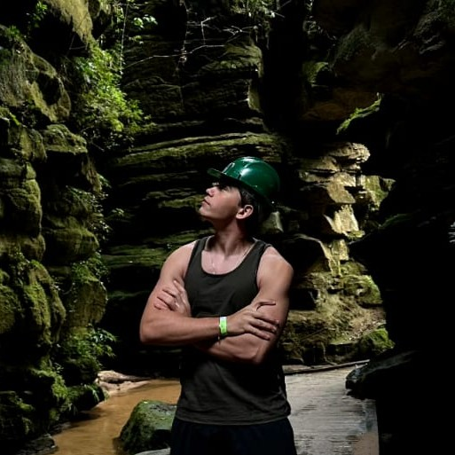

Estudante de Ciência da Computação @ UTFPR
Estudante de Ciência da Computação na Universidade Tecnológica Federal do Paraná (UTFPR), com formação técnica em Informática pelo IFPR. Tenho forte inclinação e experiência em pesquisa aplicada, atuando em modelagem estatística, análise probabilística e no desenvolvimento de soluções computacionais baseadas em dados.
CREATE TABLE desenvolvedores (
id INT PRIMARY KEY,
nome VARCHAR(100) NOT NULL DEFAULT 'Victor Gabriel de Almeida Fongaro',
curso VARCHAR(50) NOT NULL DEFAULT 'Ciência da Computação',
periodo INT NOT NULL DEFAULT 2
);#include <stdio.h>
void formacao() {
printf("Formação Acadêmica:\n");
printf("- Técnico em Informática pelo IFPR (2025)\n");
printf("- Bacharelado em Ciência da Computação pela UTFPR (atual)\n");
}
int main() {
formacao();
return 0;
}class VictorFongaro:
def __init__(self):
self.interests = ["AI", "Cybersecurity", "Hardware", "Education"]
self.skills = ["Python", "Java", "C", "C++", "SQL", "JavaScript"]
self.hobbies = ["Leitura", "Xadrez", "Robótica"]
def activity(self):
print("Atuando em projetos de pesquisa, desenvolvimento de software e soluções inovadoras.")Plataforma gamificada interativa desenvolvida para o ensino de hardware, apresentada em seminários de Ciência e Tecnologia (SCIENTIF) e premiada como melhor projeto web disciplinar e conceituada com pontuação máxima.
Projeto de pesquisa voltado à análise estatística e modelos probabilísticos para a previsão de resultados de futebol, com publicações e análises do Campeonato Brasileiro.
Atuação prática unindo informática, eletrônica e mecânica para criar soluções automatizadas e inteligentes voltadas a problemas reais da comunidade.
Solução desenvolvida e apresentada durante a participação no Hackathon Show Rural Coopavel, aplicando tecnologia ao setor do agronegócio.